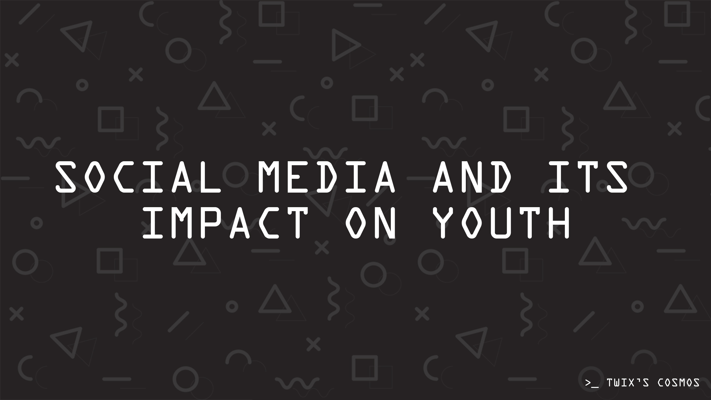
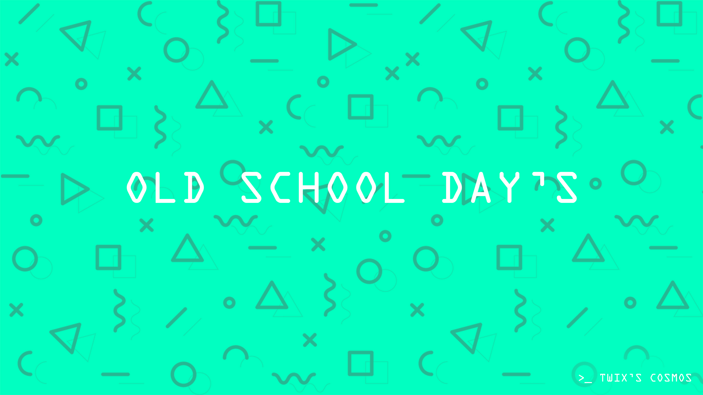

Blog
Introduction :-
As we know, each and everyone has been in a state when they are emotionally weak and trying their best to forget their past and live in the present. Due to past accidents or of some decisions which we have taken affects our mental health, so I want to talk something on mental health issues that today's teens or say today's generation is facing in an alarming rate.
⊷ Mental health also depends on our physical health -
Suppose you are not feeling energetic to do anything apart from just lying and overthinking about your past and future decisions, Now if you eat your favorite food, it would give you some sort of boost. So, if you want to maintain your mental health, you have to first focus on your diet and do exercise every day and make your body healthy because by study it has been found that 80% of the teens or today's generation having a messed up schedule which affects their
physical health and eventually getting affected with depression, anxiety or panic attacks and stressing on small things
⊷ When do we mentally break down?
As children, we have been surrounded by our parents families and friends and never had the opportunity to stay alone and live life our own way, but by time we are backstabbed, betrayed and left alone in the dark by someone whom we loved too much, and we never had been in a state where we would be able to withstand the pain of someone leaving us all alone It's that when we mentally break down, when we don't know what to do all by ourselves some experience at a young some after a long period time but from my point of view it's better to be in such a situation at a young age or else say in our teens which would help us in our adulthood.
⊷ Why be ashamed of your mental sickness?
Mental sickness is becoming a growing issue in the 21st century. Not everyone receives the help that they need. Even though mental illness is common these days and can affect anyone, there is still a stigma attached to it. People are still reluctant to accept the illness of mind because of this stigma. They feel ashamed to acknowledge it and seek help from the doctors. It's important to remember that "mental health" and "mental sickness" are not interchangeable.
Our society needs to change its perception of mental illness or disorder. People have to remove the belief attached to this illness and educate themselves about it. Only about 20% of adults and children with diagnosable mental health issues receive the therapy they
need.
Conclusion :-
The mind is one of the most powerful organs in the body, regulating the functioning of all other organs. When our minds are unstable, they affect the whole functioning of our bodies. Being both physically and emotionally fit is the key to success in all aspects of life. People should be aware of the consequences of mental illness and must give utmost importance to keeping the mind healthy like the way the physical body is kept healthy. Mental and physical health cannot be separated from each other. And only when both are balanced can we call a person perfectly healthy and well. So, it is crucial for everyone to work towards achieving a balance between mental and physical wellbeing and get the necessary help when either of them falters.

Social Media and Its Impact on Youth
Introduction:
Social media is a medium to connect with people through the internet. In this digital world, everything is being based on the internet.
Social media has brought a huge change in the communication system. It has been really easier to connect with anyone in the world.
You can send your photo, text, or videos within a couple of seconds in anywhere in the world. It’s such a powerful tool to express our creativity. Social media not limited to communication only.
People can spread social awareness with it. It several issues, we can make a group and let people know about it. It has been really simple and easy.
⊷ Good Impact on Youth:
According to stats, the biggest numbers of social media users are youth. There is a lot of good impact on them that I am going to share.
At first, social media is a place to spread knowledge and learn something new.
In the world of blogging, everyone is writing some interesting and informative content that might help you to learn something better.
will be able to find lots of likeminded people. That’s the best thing I think. Besides this, getting information about your job, hobby or profession is another interesting thing is social media.
People are building businesses these are depending on these types of platforms. It is really good and it helps the youth to understand the
leadership and entrepreneurship.
⊷ Bad Impact on youth
With so many good things there are some bad impacts also that could happen to anyone. Cyberbullying is a massive problem nowadays. But we can stay out of these problems if we become little aware. Sometimes young people get addicted to social media. They make lots of opposite gender friends and start spending
time with them doing chatting. That kills time, but they don’t realize it. Most of the students face massive loss in study.
Conclusion
I think along with bad impacts, it’s an important thing for society now.

Old School Day's
Memories are the part and parcel of every one’s life. A man always remembers the good days he has passed. There are some good memories and some bad memories in life.
The good memories are the good experiences one gets in one’s life. The good memories includes; school life memories including primary, high school, college and university life memories. The memories of school life period,
are definitely the treasure to cherish for the rest of your life. The school continuously plays and effective role in our later life period.
The school days are the best days of my life. I clearly remember my first day at school. My first day school life memories are still vivid. I can still feel how warmly I was welcomed at the school.
That truly defines the importance of school life for a child.As a child, I learned, cooperated, got myself motivated and groomed under the best company of my best friends.
I remember the first year love and wishes from my teachers. That is why I always regard my primary school life memories as the treasure for my life.
I have the best friends today and the learning experience that I got from my high school. The high school life memories are the invaluable part. I did a lot of blunders and mistakes. But thanks to my sincere friends and true teachers I was always rescued.
That is how I learned from high school life the true meaning of cooperation and love.I had a lot of shortcoming. I still remember how ignorant I was during my school days. My school life memories make me realize how important school life is for anyone.
Had it not been, I would have surely missed many things in my life. I would not be having good friends, good knowledge, good experience and the good memories.
The high school life days are very much filled with excitement. During high school life period, one becomes matured enough to understand the value of time. My high school life is a wonderful chapter in my entire memories.
In that period I learned truly. I directed myself. I learned dedication, hard work, motivation and self actualization.This is the period when I started working hard. Thanks to that hard work done, today I am happy with my career. I believe, what you learn during high school life or college life, it truly impacts the rest of your life.
One of my best high school memory was the day when I won prize in annual inter schools science fair. It was the moment of great pride for me, my parents and for my school. The Principal of our school gave me a shield. That shied is still with me.
I always had the habit, during my school life, to note down everything on a diary. During my free time I always open that diary. It helps me soothes my pain. It fulfills me with confidence and courage. I miss a lot friend of mine. I have a good amount of school life pictures.
Those school life pictures are like my best memories. I remember the days we celebrated, the extracurricular activities we took part in. I remember how happy were my parent when I obtain first position in my entire school. That’s the best part of my school life. It never let me be bored.
It is said that a person always remembers his first day at school and the last day at school. The first day a child remembers because he came there weeping. And the last day a student remember because he left the school weeping again. In my case, I remember clearly my first day at school and my last day at the school.
The joys of school life are surely countless. Indeed, the school days are the best of our lives.
It's Better To Live Alone
Living on your own offers a great deal of freedom to act how you want and live the way you want. If you want to lie on the couch for days on end watching marathons of whatever show you enjoy, no one is there to pass judgment on you.
You can turn up the volume as loud as you want on whatever type of music you want, without the worry of a complaining roommate.
There's something comforting in the fact that after a long, hard day at work, you can come home and not be bothered by anyone. You have your own space, a place to feel 100 percent relaxed and act as you please.
Of course it may seem lonely at times, but as long as you have friends to keep you company when you want their company, you may never really feel alone. After all, isn't it better to actually be alone than to wish you were alone?